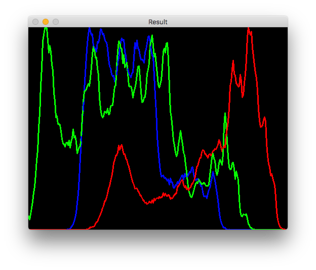
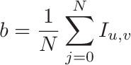
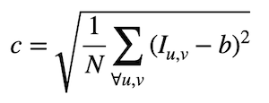
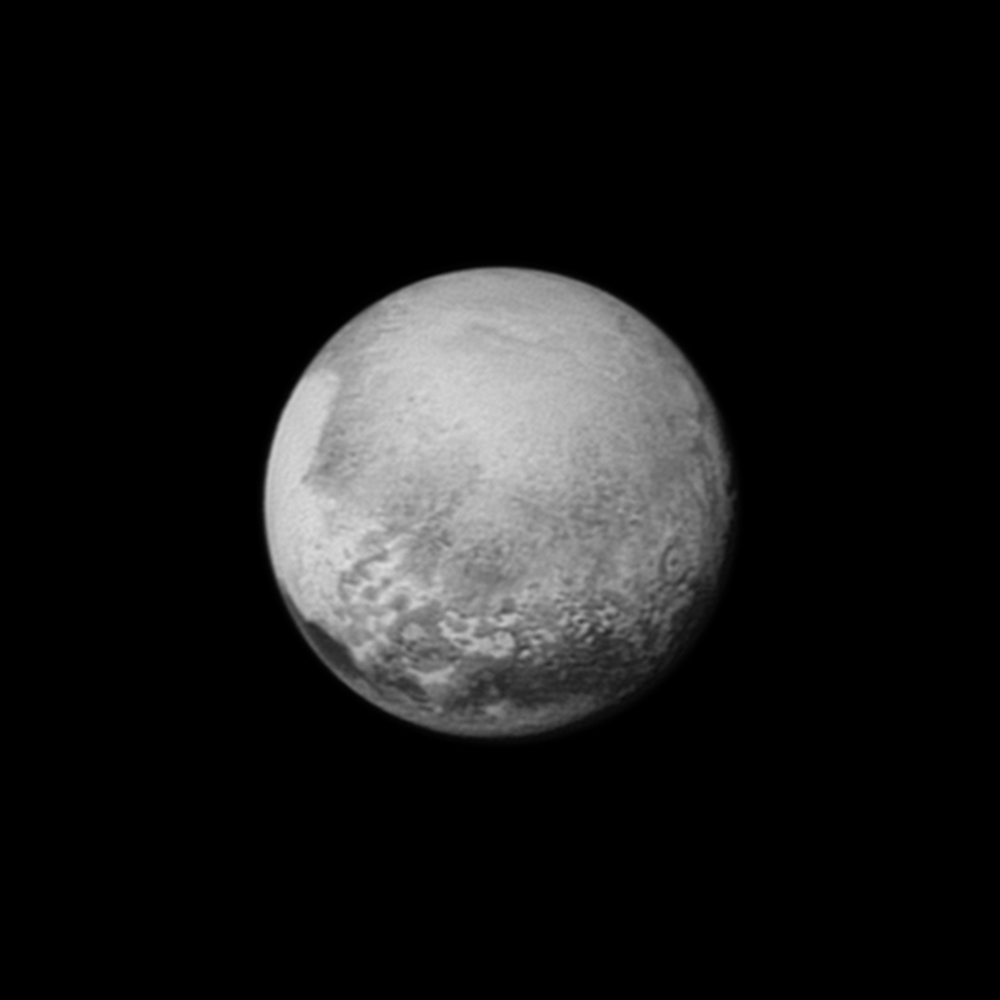

Tema 2- Imagen digital y vídeo¶
En este tema usaremos OpenCV para trabajar con cambios de resolución de imágenes, histogramas, brillo/contraste y conversión entre espacios de color.
Cambios de resolución espacial y radiométrica¶
En OpenCV podemos cambiar la resolución espacial (es decir, el tamaño de la imagen) con la función resize:
1 2 3 4 5 | // Guardamos la imagen en destino con el 75% de su tamaño original resize(origen, destino, Size(), 0.75, 0.75); // Guardamos la imagen en destino con un tamanyo de 640(ancho)x480(alto) resize(origen, destino, Size(640,480)); |
Para cambiar sólo la resolución radiométrica (el número de bits usados para representar el valor de un píxel), también llamada depth, podemos usar el método convertTo indicando el nombre de la nueva imagen y su resolución:
1 2 | Mat destino; origen.convertTo(destino, CV_8U); // Convertir a 8 bits y guardar en destino |
Histogramas¶
Podemos calcular el histograma de una imagen con la función calcHist. Esta función recibe muchos parámetros porque está pensada para calcular a la vez todos los histogramas de un array de imágenes.
Parámetros de calcHist:
images: Array de imágenes, deben tener la misma resolución, CV_8U, CV_16U o CV_32F, y el mismo tamaño, aunque pueden tener un número distinto de canales.nimages: Número de imágenes en este arraychannels: Lista de los canales usados para calcular el histograma, comenzando por el número de canal 0.mask: Matriz opcional para usar una máscara binaria. Si no está vacía debe ser un array de 8 bits del mismo tamaño que images[i].hist: Matriz donde guardaremos el histograma.dims: Dimensionalidad del histogramahistSize: Array de tamaños de histogramas para cada dimensión.ranges: Array de los valores mínimos y máximos para cada imagen. Cuando es el mismo para todas las imágenes (uniform=true), sólo hay que especificar un array de dos elementos.uniform(opcional): Indica si el histograma es uniforme (por defecto, true).accumulate(opcional): Si es true, el histograma no se resetea cuando se analiza otra imagen, de forma que podemos tener un histograma global de varias imágenes (por defecto, false).
Veamos un ejemplo que calcula el histograma de una imagen en escala de grises, lo muestra por el terminal y crea una gráfica en una ventana:
1 2 3 4 5 6 7 8 9 10 11 12 13 14 15 16 17 18 19 20 21 22 23 24 25 26 27 28 29 30 31 32 33 34 35 36 37 38 39 40 41 42 43 44 | #include <opencv2/opencv.hpp> #include <iostream> using namespace std; using namespace cv; int main() { Mat image = imread("lena.jpg", IMREAD_GRAYSCALE); if (!image.data) { cout << "Error opening image" << endl; return -1; } Mat hist; // Variable donde guardaremos el histograma int histSize = 256; // Numero de bins del histograma calcHist(&image, 1, 0, Mat(), hist, 1, &histSize, 0); // Calculamos el histograma // Mostramos los valores por pantalla for( int i = 0; i < histSize; i++ ) cout << " " << hist.at<float>(i); cout << endl; // Mostramos una grafica con el histograma int hist_w = 512; int hist_h = 400; int bin_w = cvRound((double)hist_w/histSize); Mat histImage(hist_h, hist_w, CV_8UC1, Scalar(0,0,0)); // Normalizamos el histograma entre 0 y histImage.rows normalize(hist, hist, 0, histImage.rows, NORM_MINMAX, -1, Mat()); // Dibujamos la grafica del histograma usando line, que crea una linea entre dos puntos. for( int i=1; i<histSize; i++ ) { line( histImage, Point(bin_w*(i-1), hist_h - cvRound(hist.at<float>(i-1))), Point(bin_w*(i), hist_h - cvRound(hist.at<float>(i))), Scalar(255,0,0), 2, 8, 0); } namedWindow("Result", WINDOW_AUTOSIZE); imshow("Result", histImage); waitKey(0); } |
Cuando hay tres canales lo más frecuente es construir un histograma para cada uno de ellos. Para separar los canales de una imagen podemos usar la función split:
1 2 3 4 5 6 7 8 9 10 11 12 13 14 15 16 17 | #include <opencv2/opencv.hpp> #include <iostream> using namespace std; using namespace cv; int main() { Mat color_image = imread("lena.jpg"); vector<Mat> channels; split(color_image, channels); imshow("Blue", channels[0]); imshow("Green", channels[1]); imshow("Red", channels[2]); waitKey(0); } |
Ejercicio¶
Haz un programa llamado histograma_color.cpp que reciba por parámetro el nombre de fichero de una imagen y el nombre de otra imagen donde guardaremos el resultado. El programa debe mostrar en una ventana el histograma de sus tres colores básicos, y además guardarlo en el fichero de salida. Ejemplo de ejecución:
1 | ./histograma_color lena.jpg histograma.jpg |

Tendrás que usar como base el código anterior para calcular el histograma en un canal, y duplicar algunas líneas para hacerlo en BGR. Una vez divididos los canales con split puedes calcular el histograma de cada canal de este modo:
1 | calcHist(&bgr_planes[0], 1, 0, Mat(), b_hist, 1, &histSize, 0); // Calculamos el histograma B. |
Brillo/contraste¶
Tal como puedes ver en las transparencias de teoría, el brillo y contraste de una imagen se definen con las siguientes ecuaciones:


Ejercicio¶
Implementa un programa en OpenCV llamado bc.cpp que reciba por parámetro el nombre de una imagen (la cargaremos en escala de grises) y muestre por el terminal su brillo y contraste. Ejemplo de ejecución:
1 2 3 | ./bc lena.jpg b=120.445 c=48.2231 |
Importante: Como la corrección de prácticas es automática, la salida del programa debe tener exactamente el formato que se indica, por lo que la última línea del código debería ser como la siguiente:
1 | cout << "b=" << brillo << endl << "c=" << contraste << endl; |
Las variables brillo y contraste deben ser de tipo float.
Conversión de espacios de color¶
OpenCV soporta más de 150 espacios de color. La función que realiza las conversiones entre ellos es cvtColor, y admite hasta 4 parámetros:
src: Imagen de entradadst: Imagen de salida con el mismo tamaño y resolución (depth) que la imagen de entrada.code: Código de conversión del espacio de color. Su estructura esCOLOR_SPACEsrc2SPACEdst. Ejemplos:COLOR_BGR2GRAY,COLOR_YCrCb2BGR.dstCn(opcional): El número de canales en la imagen destino. Si se omite el parámetro, se infiere del número de canales de la imagensrc.
Ejemplo de uso:
1 | cvtColor(input_image, output_image, COLOR_BGR2GRAY); |
Importante: La función
cvtColorsólo convierte de RGB a otro espacio de color o viceversa, por lo que si queremos convertir una imagen entre dos espacios distintos a RGB, primero tenemos que pasarla a RGB y después al espacio destino.
Ejemplos de conversión:
1 2 3 4 | Mat converted; cvtColor(image, converted, COLOR_BGR2GRAY); // Convertir RGB a escala de grises cvtColor(image, converted, COLOR_BGR2Luv); // Convertir a LUV cvtColor(image, converted, COLOR_BGR2XYZ); // Convertir a CIEXYZ |
Puedes consultar en este enlace todas las fórmulas que usa OpenCV para conversión entre espacios. Por ejemplo, para convertir un valor RGB en escala de grises se usa la siguiente fórmula: 0.299R + 0.587G+ 0.114*B.
Ejercicio¶
Haz un programa llamado colorLight.cpp que reciba por parámetro el nombre de una imagen y muestre con imshow la imagen original (en color) RGB, el canal L de CIELab, el canal V de HSV, el canal L de HSL y el canal Y de YCbCr. También debe guardar en escala de grises las tres imágenes correspondientes a estos canales con los nombres cielab_l.jpg, hsv_v.jpg, hsl_l.jpg y ycrcb_y.jpg.
Para hacer pruebas puedes usar la siguiente imagen de entrada:

By I, Luc Viatour, CC BY-SA 3.0, .
Ejemplo de ejecución:
1 | ./colorLight Fire_breathing_2_Luc_Viatour.jpg |
Pista: Tras convertir las imágenes con
cvtColorpuedes usarsplitpara separar sus canales.
Pseudocolor¶
Mediante la función applyColorMap también podemos pseudocolorear imágenes en escala de grises usando los mapas de color predefinidos en OpenCV. Por ejemplo:
1 2 3 | Mat im_gray = imread("pluto.jpg", IMREAD_GRAYSCALE); Mat im_color; applyColorMap(im_gray, im_color, COLORMAP_JET); |
Escribe un programa completo que contenga este código de ejemplo (no hay que entregarlo) para visualizar el resultado de pseudocolorear la siguiente imagen de Plutón obtenida por la sonda New Horizons:
